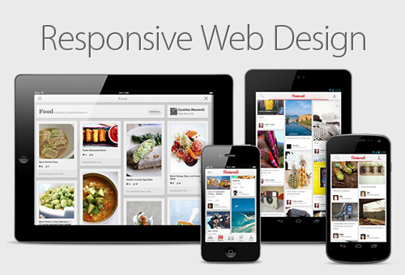
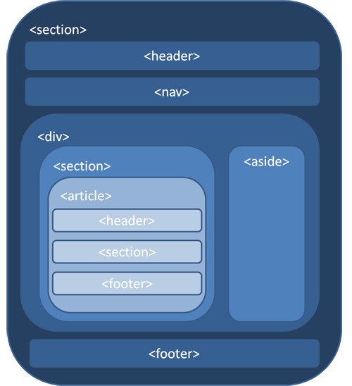

Created by Manel Rhaiem / @manelbutterfly
C'est Quoi ?
Petite Historique..!
Qui a populariser cette
idée
le developpeur Ethan Marcotte
Avant
Maintenant
tout les clients demande un site Internet avec une version mobile de celui-ci
L'Objectif
un même site doit pouvoir s’adapter lui-même aux différentes résolutions d’écrans

Les bases
Pour que notre site soit flexible
La mise en page
Découpez en HTML5
La mise en page
media queries
Les images
s'étirent se redimensionnent ou se disparaissent
la typographies
privilégier les unités % et em
La couche Javascript
- une navigation originale avec javascript
- le code soit flexible à l'adaptation
- Utilisez Jquery mobile
- laissez tomber ces fonctionnalité
Le poids
- Débit
- Supprimez les scripts et media inutile
- Créer des images alternative
PLus technique maintenant
Pré-requis

Intégration
Media Query en HTML
Media Query avec @import
Media Query dans une feuille de styles
mais généralement il est préférable de tabler sur 3 séries à l'aide des medias queries
le viewport meta tag
Exemple
Framework
existent plusieur et les plus populaire